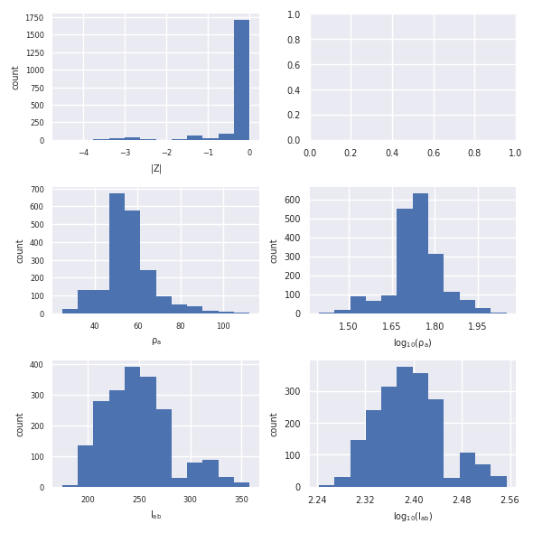

Note
Click here to download the full example code
Importing Syscal ERT data¶
Out:
generating ids
assigning ids
renumbering electrode numbers
generating ids
assigning ids
Generating histogram plot for key: r
Generating histogram plot for key: rho_a
Generating histogram plot for key: Iab
import reda
container = reda.ERT()
container.import_syscal_txt('data_syscal_ert/data_normal.txt')
container.import_syscal_txt(
'data_syscal_ert/data_reciprocal.txt', reciprocals=48)
import reda.utils.geometric_factors as edfK
K = edfK.compute_K_analytical(container.data, spacing=0.25)
edfK.apply_K(container.data, K)
import reda.plotters as plotters
plotters.histograms.plot_histograms(container, ['r', 'rho_a', 'Iab', ])